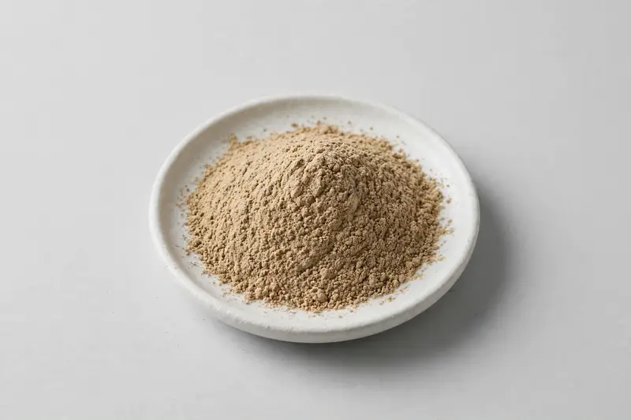

Bulk fucoidan powder from brown seaweed for marine-ingredient-positioned formulations.

Overview
Fucoidan powder is a sulfated polysaccharide extracted from brown seaweed, used in marine-ingredient, wellness and cosmetic-positioned formulations. Content grades and molecular weight profiles vary by source species and extraction method. As a Xi'an-based trading company, we source fucoidan through partner producers and confirm source species, content grade and documentation feasibility after receiving your target specification.
Specifications below reflect commonly requested options in the market — not a stock list. Share your target spec and we'll confirm exactly what we can supply, honestly.
| Specification | Details |
|---|---|
| Botanical identity | Fucoidan (sulfated polysaccharide) powder |
| Marker compound | Commonly requested spec grades: fucoidan content grades; actual specs confirmed on inquiry. |
| Appearance | Fine powder, color typical of the extract |
| Mesh size | Typically 80–100 mesh (confirm per inquiry) |
| Testing | COA/TDS arranged on request; scope agreed per your spec |
Applications
Documentation
We don't claim in-house labs or certifications we don't hold. COA and TDS documents can be arranged on request, and testing scope is agreed against your specification before supply.
FAQ
Related products
Salvia officinalis
Key marker: 10:1 / rosmarinic acid
View specs →Perilla frutescens
Key marker: ALA oil / rosmarinic acid
View specs →Diosmin (citrus-derived flavonoid)
Key marker: Diosmin 90%+
View specs →Forsythia suspensa
Key marker: Forsythin Content
View specs →Irvingia gabonensis
Key marker: Extract Ratio
View specs →Send your target spec and volumes — we'll respond with a tailored quotation.
Request a Quote